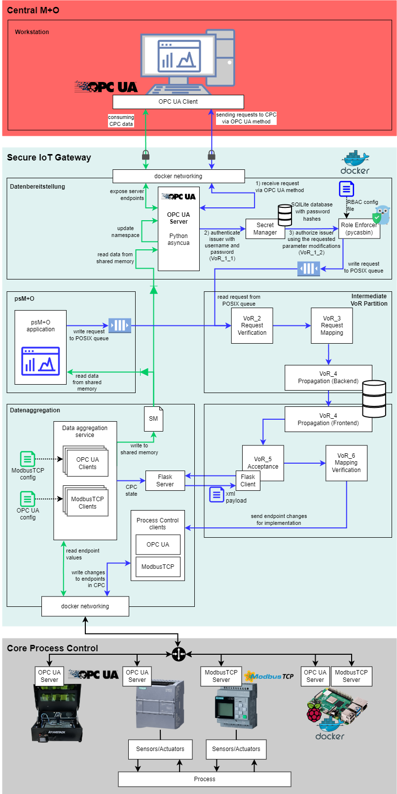
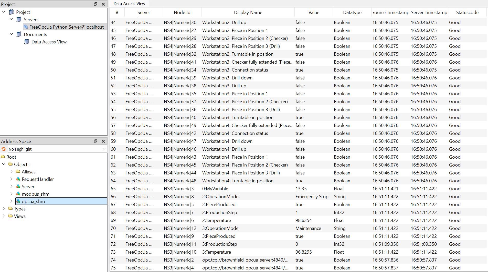
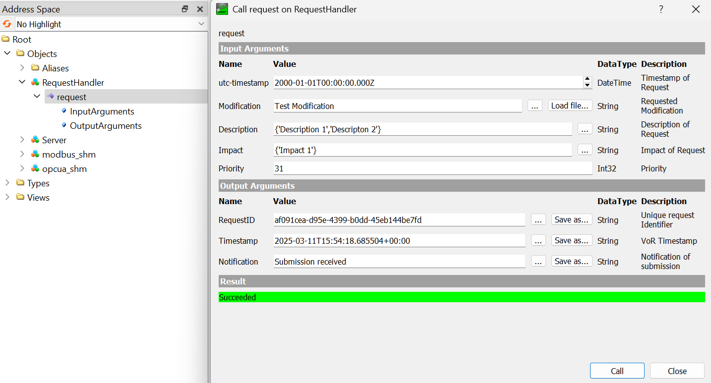

A guide for developers is available in DEV.md, with setup steps and configuration advice for different labs and equipment. Please refer to it for integration and development instructions.
A Docker-based IoT gateway setup for OPC UA and ModbusTCP communication.

Clone the repository using Git:
git clone https://gitlab.technik-emden.de/bmbf_siot-gateway/secure-iot-gateway.git
Navigate to the repository directory
cd siot-gateway-docker
Building, (re)creating, starting:
docker-compose -f docker-compose.yaml up --build


Attaching to brownfield-opcua-server, central-mo-client, interface-partition, intermediate-vor-partition
brownfield-opcua-server | Brownfield OPC UA Servers started successfully.
interface-partition | OPC UA Server of the interface partition is running.
central-mo-client | Central M+O Application started.
# Submit Requests with running interface-partition, but offline intermediate-vor-partition: => requests will be stored in POSIX queue
central-mo-client | Submit request with priority 9 at 2025-03-11 15:43:09.646760+00:00
interface-partition | Request with priority 9 at 2025-03-11T15:43:09.651060+00:00 received and forwared.
central-mo-client | Request ID: cada693b-8e9a-4a77-8f96-21fbb38f91a6
central-mo-client | Server Timestamp: 2025-03-11T15:43:09.651060+00:00
central-mo-client | Notification: Submission received
central-mo-client | Submit request with priority 24 at 2025-03-11 15:43:11.655272+00:00
interface-partition | Request with priority 24 at 2025-03-11T15:43:11.657791+00:00 received and forwared.
central-mo-client | Request ID: 32a0938f-f626-4873-b959-df3137f21517
central-mo-client | Server Timestamp: 2025-03-11T15:43:11.657791+00:00
central-mo-client | Notification: Submission received
central-mo-client | Submit request with priority 5 at 2025-03-11 15:43:13.661215+00:00
interface-partition | Request with priority 5 at 2025-03-11T15:43:13.662997+00:00 received and forwared.
central-mo-client | Request ID: a5592e3d-2448-43b0-afb1-133ac1b74a5c
central-mo-client | Server Timestamp: 2025-03-11T15:43:13.662997+00:00
central-mo-client | Notification: Submission received
# intermediate-vor-partition started and begins processing message queue content with respect to the priority of the request.
intermediate-vor-partition | Intermediate VoR Partition started!
intermediate-vor-partition | Message Queue /interface_partition_mq attached!
intermediate-vor-partition | Request with priority 24 and payload b"{'request_id': '32a0938f-f626-4873-b959-df3137f21517', 'timestamp': datetime.datetime(2025, 3, 11, 15, 43, 11, 655272, tzinfo=datetime.timezone.utc), 'modification': 'Enhance automated assembly line', 'description': {'description_0': 'Refactor sensor data integration', 'description_1': 'Install new automation features', 'description_2': 'Enable production line optimization'}, 'impact': {'impact_0': 'Lower operational costs', 'impact_1': 'Higher yield rates'}, 'prio': 24}" received.
intermediate-vor-partition | Request with priority 9 and payload b"{'request_id': 'cada693b-8e9a-4a77-8f96-21fbb38f91a6', 'timestamp': datetime.datetime(2025, 3, 11, 15, 43, 9, 646760, tzinfo=datetime.timezone.utc), 'modification': 'Improve sensor calibration process', 'description': {'description_0': 'Enhance production scheduling'}, 'impact': {'impact_0': 'Increased throughput', 'impact_1': 'Faster production cycles', 'impact_2': 'Improved resource utilization'}, 'prio': 9}" received.
intermediate-vor-partition | Request with priority 5 and payload b"{'request_id': 'a5592e3d-2448-43b0-afb1-133ac1b74a5c', 'timestamp': datetime.datetime(2025, 3, 11, 15, 43, 13, 661215, tzinfo=datetime.timezone.utc), 'modification': 'Update production software', 'description': {'description_0': 'Update system diagnostics'}, 'impact': {'impact_0': 'Higher yield rates'}, 'prio': 5}" received.
# Now the request come in and all partitions that are associated with their processing are running.
central-mo-client | Submit request with priority 14 at 2025-03-11 15:43:15.665898+00:00
interface-partition | Request with priority 14 at 2025-03-11T15:43:15.667656+00:00 received and forwared.
intermediate-vor-partition | Request with priority 14 and payload b"{'request_id': '69460836-f61e-448d-8f7a-c8edf25135d6', 'timestamp': datetime.datetime(2025, 3, 11, 15, 43, 15, 665898, tzinfo=datetime.timezone.utc), 'modification': 'Install new production machinery', 'description': {'description_0': 'Enhance production scheduling'}, 'impact': {'impact_0': 'Enhanced system reliability', 'impact_1': 'Faster production cycles'}, 'prio': 14}" received.
central-mo-client | Request ID: 69460836-f61e-448d-8f7a-c8edf25135d6
central-mo-client | Server Timestamp: 2025-03-11T15:43:15.667656+00:00
central-mo-client | Notification: Submission received
central-mo-client | Submit request with priority 28 at 2025-03-11 15:43:17.670960+00:00
interface-partition | Request with priority 28 at 2025-03-11T15:43:17.673943+00:00 received and forwared.
intermediate-vor-partition | Request with priority 28 and payload b"{'request_id': '650b6353-0706-4513-ba86-2e3dafcf86e0', 'timestamp': datetime.datetime(2025, 3, 11, 15, 43, 17, 670960, tzinfo=datetime.timezone.utc), 'modification': 'Implement new machine learning model', 'description': {'description_0': 'Enable production line optimization', 'description_1': 'Install new automation features'}, 'impact': {'impact_0': 'Reduced downtime'}, 'prio': 28}" received.
central-mo-client | Request ID: 650b6353-0706-4513-ba86-2e3dafcf86e0
central-mo-client | Server Timestamp: 2025-03-11T15:43:17.673943+00:00
central-mo-client | Notification: Submission received
central-mo-client | Submit request with priority 2 at 2025-03-11 15:43:19.677723+00:00
intermediate-vor-partition | Request with priority 2 and payload b"{'request_id': '14ec21c6-00d8-4dcc-9a97-8674ca8caf4d', 'timestamp': datetime.datetime(2025, 3, 11, 15, 43, 19, 677723, tzinfo=datetime.timezone.utc), 'modification': 'Upgrade system monitoring tools', 'description': {'description_0': 'Update system diagnostics', 'description_1': 'Update inventory tracking system', 'description_2': 'Install new automation features'}, 'impact': {'impact_0': 'Reduced downtime'}, 'prio': 2}" received.
interface-partition | Request with priority 2 at 2025-03-11T15:43:19.680922+00:00 received and forwared.
central-mo-client | Request ID: 14ec21c6-00d8-4dcc-9a97-8674ca8caf4d
central-mo-client | Server Timestamp: 2025-03-11T15:43:19.680922+00:00
central-mo-client | Notification: Submission received
asyncua — OPC UA communicationpyModbusTCP — ModbusTCP communicationxmlschema — XML Schema validation and parsingposix-ipc — POSIX-based inter-process communicationcasbin — Authorization/Access controlbcrypt — Password hashing and securityrequests — HTTP requestsflask — Web application frameworkHeiko Schoon
University of Applied Sciences Emden/Leer
heiko.schoon@hs-emden-leer.de
Yuanchen Zhao
RWTH Aachen
y.zaoh@iat.rwth-aachen.de
Gratis or libre? ... No, gratis and libre:
This is free software (free as in speech and free as in beer) released under a MIT license. Complete licensing information is available in the LICENSE file.